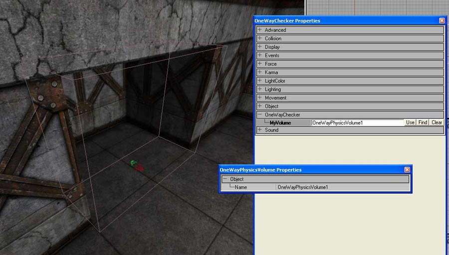

One Way Volume
This is a two actor system I coded last night that only allows players to pass through it in one direction.
class OneWayPhysicsVolume extends PhysicsVolume; // Volume to handle adding and removing players from the affected array. var array<Pawn> MyPawns; var array<vector> MyLocs; var() bool bAffectsRed, bAffectsBlue; // For team games. simulated event PawnEnteredVolume(Pawn Other) { local int i; if(Level.Game.bTeamGame && ((Other.GetTeamNum() == 0 && !bAffectsRed) || (Other.GetTeamNum() == 1 && !bAffectsBlue))) return; for(i=0; i<MyPawns.Length; i++) { if (MyPawns[i] == Other) return; // Make sure this pawn isn't already in the array. if (MyPawns[i] == None) { // remove empty slot MyPawns.Remove(i, 1); MyLocs.Remove(i, 1); i--; } } MyPawns[i] = Other; MyLocs[i] = Other.Location; } event PawnLeavingVolume(Pawn Other) { local int m; for(m = MyPawns.Length - 1; m >= 0; m--) { if (MyPawns[m] == Other ||MyPawns[j] == None) { MyPawns.Remove(m, 1); MyLocs.Remove(m, 1); } } } DefaultProperties { bAffectsRed=true bAffectsBlue=true }
Then the actor that actually handles the movement:
class OneWayChecker extends Actor placeable; var() edfindable OneWayPhysicsVolume MyVolume; var float ObjectAngle; function Tick(float DT) { local int k; local rotator R; local vector B, NewLoc; if(MyVolume == none) { Destroy(); return; // If there's no volume assigned, destroy this actor. } for(k=0; k<MyVolume.MyPawns.Length; k++) { if(MyVolume.MyPawns[k] != None) { // Find out the angle between this actor's rotation and // the rotator of the player's last and current position. // I know this next line could be optimized by not using acos. :) if(acos(Normal(vector(Rotation)) dot Normal(MyVolume.MyLocs[k] - MyVolume.MyPawns[k].Location)) < ObjectAngle) { // Find the rotator perpendicular with this actor. R.Yaw = Rotation.Yaw + 16384; // Find a point along that rotator. B = MyVolume.MyLocs[k] + vector(R); // Find the point where the player's location intersects // perpendicularly with the line between those vectors. NewLoc = MyVolume.MyLocs[k] + Normal( B - MyVolume.MyLocs[k] ) * ((( B - MyVolume.MyLocs[k] ) dot ( MyVolume.MyPawns[k].Location - MyVolume.MyLocs[k] )) / VSize( MyVolume.MyLocs[k] - B )); // Keep the player's Z axis position. NewLoc.Z = MyVolume.MyPawns[k].Location.Z; // Move the pawn to this new position. MyVolume.MyPawns[k].SetLocation(NewLoc); } } } } DefaultProperties { bDirectional=True bHidden=True ObjectAngle=1.5 }
Set up in the editor, it looks like this:

The direction of the checker's arrow indicates where the player will be able to walk. Trying to go against this arrow will stop the player.